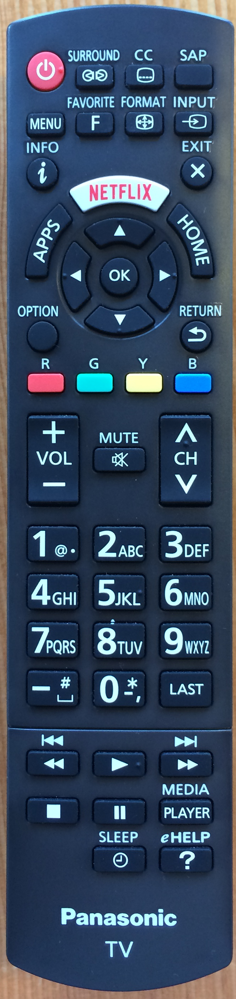

Running Firefox OS 2.1

See big version
| Operating System |
FreeBSD Viera |
| Screen Resolution |
1536 x 864 |
| Web Browser |
Firefox 34.0 |
| Browser Size |
1536 x 784 |
| Color Depth |
24 |
| Javascript |
Yes |
| Flash Version |
Not Installed |
| Cookies |
Yes |
| User Agent |
Mozilla/5.0 (FreeBSD; Viera; rv:34.0) Gecko/20100101 Firefox/34.0 |
CSS3 tests: 49%
From The CSS3 Test.
- Backgrounds and Borders: 91%
- Image Values and Replaced Content: 29%
- Selectors: 100%
- Media Queries: 100%
- Basic User Interface: 75%
- Transitions: 100%
- Animations: 100%
- Transforms: 86%
- Text: 46%
- Text Decoration: 36%
- Fonts: 94%
- Writing Modes: 33%
- Color: 100%
- Multi-column Layout: 69%
- Values and Units: 69%
- Regions: 0%
- Speech: 0%
- Flexible Box Layout: 97%
- Grid Layout: 6%
- Box Alignment: 11%
- Resetting All Properties: 100%
- Conditional Rules: 100%
- Masking: 6%
- Compositing and Blending: 67%
- Shapes: 0%
- Exclusions: 0%
- Filter Effects: 21%
- Pointer Events: 0%
- Fullscreen API: 0%
- Fragmentation: 50%
- Positioning: 100%
- Will Change: 0%
- CSSOM View Module: 0%
- Ruby: 0%
- Scroll Snap Points: 0%
- Logical Properties: 2%
HTML 5 Test: 414/555
See test results.
Media query tests
Active media queries:
screencolororientation:landscapemin-device-widthmax-device-widthmin-device-heightmax-device-heightmin-widthmax-widthmin-heightmax-height(min-resolution)(max-resolution)
Inactive media queries:
printtvcolor-indexmonochromehandheldprojection(orientation : portrait)(-webkit-min-device-pixel-ratio: 2)(scan:progressive)(scan:interlace)(grid)(pointer:coarse)(pointer:fine)(pointer:none)(luminosity:normal)(luminosity:dim)(luminosity:washed)(hover)(script)
{kind=link}